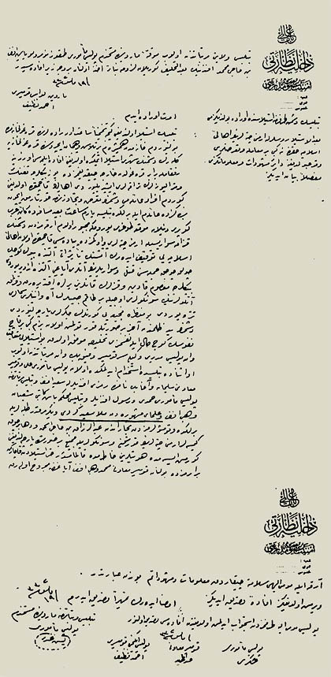
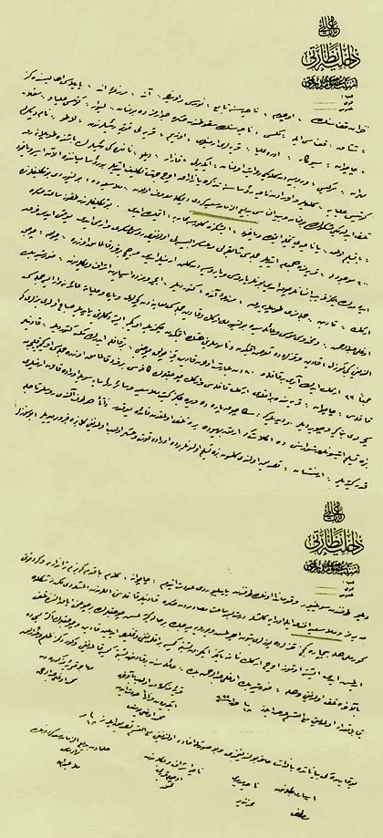

|
Ermeni Çeteleri ile Mücadelesi |
  
|
|
Ermeni Çeteleri ile Mücadelesi |
|
Bediüzzaman’ýn Ermeni Çeteleri ile Mücadelesi

Bâb-ý Âlî Dâhiliye Nezâreti Emniyyet-i Umûmiyye Müdîriyeti
Bitlis Vilâyeti'nin 2 Temmuz sene (1)332 târîhli tahrîrâtý sûretidir.
Diðer arîzalara zeyldir.
Kelbaðýr'a tahvîlen ta`yîn buyurulan Kâ'im-i makâm Ýbrâhim Bey'in birâderi Hizan havâlîsinde Rus ve Ermenilerin irtikâb etdikleri fecâyi` hakkýnda aldýðý ma`lûmâtý hâvî vesâ'ik leffen arz ve takdîm kýlýndýðý ma`rûzdur. Ol bâbda.
Bâb-ý Âlî Dâhiliye Nezâreti Emniyyet-i Umûmiyye Müdiriyeti
Hizan kazâsýnýn Uçum nâhiyesine tâbi` Nurs ve Avnik, End, Mezra'-i End yaylasý ahâlîsindeniz. Þatak kazâsý ile Müküs nâhiyesinin sükûtundan sonra civârýmýzda bulunan Livar, Kötis-i Ulyâ ve Süflâ, Çaçvan, Þifkâr, Edre-i Ulyâ karyeleri Ermenileri Özim karyeli komite re'îslerinden Lato nâm-ý diðerle Mihran, Serkis ve Rusya'dan geldiði rivâyet olunan Iðdýrlý Kazar, Dilo nâmýndaki re'îslerin baþýnda toplanarak Kötis-i Ulyâ'ya geldiler ve oradan nâhiye rü'esâsýna tezkire yazarak üç cihet teklîf etdiler. Bu rü'esâ miyânýnda el-ân esîr veyâhûd telef edildiði meþkûk bulunan ve beyne'n-nâs Bediüzzaman Said-i Kürdî demekle ma`rûf olan Molla Said de bulunuyordu. Bu tekliflerinde ya teslîm olmak ya nâhiyeyi tahliye etmek veyâhûd iþinize gelirse muhârebe etmek idi. Bu teklîflerinden dokuz saat sonra 600 mevcûdla karyemize hücûm etdiler. Cümlesi þapkalý ve asker elbiseli olduðundan Rus askeri var mý idi, yok mu idi fark edemedik. Yalnýz garîb insânlar çok idi. Bunlar ya Rus veyâ Rusya'dan gelen Ermeniler idi ve hiç bir ferd kalmamak üzere çoluk çocuk, erkek-kadýn cümlemizi toplayarak Mezraa-i End'e götürdüler. Ýçerimizde Ýpayran [Ýspandan) eþrâf ve beylerinden Hurþid Bey oðlu Abdurrahman ve mahdûmu Musa ve â'ilesi de bulunuyordu. Erkek ve kadýn cümlesi mu`âyeneden geçirildi ve para ve huliyyâta â'id ne var ise cümlesi alýndýðý gibi, güzel kadýn ve kýzlara da taarruz etmekten ve nâmûslarýný hetketmekden çekinmediler. O gece istediklerini yapdýlar. Sabah oldu. Bizleri ki, cem'an 33 erkek idik, ayrý bir kâfile ve seksenden ibaret olan kadýn kýz, çoluk çocuðu bir kâfile ederek Müküs'e götürdüler. Kadýnlar kâfilesi Çaçvan karyesinde býrakýldý. Erkek kâfilesi ve erkek çocuklarýn kâffesi bir ferd kalmamak üzere cümlesi o gece kýlýçdan geçirildi. Beni geri çevirdiler ve dediler ki; "Sana çok para da vereceðiz. Git, Molla Said vesâ'ir rü'esâya söyle! Orada kalan Ermenileri bize teslîm etsinler ve þurasýný da anlat ki, artýk bî-hûde yere telef olmakdan fâ'ide yokdur. Zaten her taraf alýndý. Ruslar tâ Haleb'e kadar gitdiler. Ermenistan tasdik olundu. Gelsin bize teslîm olsunlar. Bir de orada kuvvet ve asker olup olmadýðýný gel bize haber ver" dediler. Bu sözler Dilo tarafýndan söyleniyor ve kumanda onun tarafýndan yapýlýyordu. Avdet etdim, Çaçvan'a geldim. Bakdým ki bizim jandarma ve Kürd kuvveti müdîrimiz ve Molla Said Efendi ile oraya gelmiþler, dört-beþ saat müsâdemeden sonra kadýnlar kâfilesini ellerinden almýþlardý. Lâkin ne þekilde görmeli. Hele bî-çâre genç kýzlarý da yüzleri bütün ýsýrýlmýþ ve yürüyemeyecek bir hâle getirilmiþ; çocuklarýn bir çoðu ayak altýnda telef edilmiþ idi. Ýþte otuz üç erkek nâmýna yalnýz ikimizden baþka kimse býrakýlmadýðýný ve tahlîs edilen kadýn ve çocuklarýn ekserîsi de bilâhire telef olunduðunu ve hele Hurþid Bey oðlu Abdurrahman Bey ailesinden bir kadýndan baþka kimse kalmadýðýný ve gördüðümüz zulm ve gaddârlýk kâbil-i ta'dâd olmadýðýný maa'l-kasem arz eyleriz.
Fî 18 Haziran sene [1]332
Karye-i mezkûreden olup bi'l-âhire Iðdýr'dan firâren avdet eden Mehmed oðlu Yusuf
Muhâcir karye-i mezkûreden Mehmed oðlu Abdurrahman

Bâb-ý Âlî Dâhiliye Nezâreti Emniyet-i Umûmiyye Müdiriyeti
Bitlis Vilâyeti mürettebatýndan olup muvakkaten Mardin'de müstahdem polis me'mûru dokuz numaralý Yasin Efendi bin Hacý Mehmed Efendi'nin ba'de't-tahlif görülen lüzuma binâ'en ahzolunan ber-vech-i zîr ifâdesidir.
Fî 19 Mayýs sene (1)332
Mardin Livâsý Komiseri Ahmed Nazif
- Bitlis'in düþman tarafýndan istîlâsýnda orada bulundunuz mu?
- Evet orada idim.
- Ba'de'l-istîlâ Ruslarla Ermeni çetelerinin ahâlî-i Ýslâmiyye hakkýnda ne gibi bir mu`âmele ve ta`arruzlarý vukû` bulduðuna dâ'ir meþhûdât ve ma`lûmâtýnýzý mufassalan beyân ediniz.
- Bitlis istîlâ olunduðu gece, tahmînen sâ`at on râddelerinde karakolhânemde bulunuyordum. Hânemden hemþîrem bir telâþ ve heyecân içerisinde karakolhâneye gelerek düþmanýn þehri istîlâ etmekde olduðunu ifâde eylemesi üzerine rüfekâmla berâber karakoldan hârice çýktýðýmýzda yüz binlerce tüfeng ve mitralyözlerin tarrakalarý iþidiliyordu. Ahâlînin kaçmakda olduðunu gördüm. Efrâd-ý â'ilemi düþmanýn ta`arruz ve tecâvüzâtýndan kurtarmak için bendeniz de â'ilem ile birlikde Bitlis'e yarým sâ`at ba'îd mesâfede kâ'in Arabköprü denilen mevki`e doðru yürümeðe mecbûr oldum. Arkamýzdan düþmanýn Kazak süvârîsiyle Ermeni çeteleri ve önümüzde piyâdesi kaçmakda olan ahâlî-i Ýslâmiyyeyi tevkîf ederek ateþinin te'sîrâtý altýnda büyük küçük, çoluk çocuk cümlesini katl ve süvârîlerinin atlarý ayaðý altýnda ezdiriyordu. Binlerce ma'sûm kadýn ve kýzlarýn kanlarýný yerlere akýtdýrarak ve Kazak atlýlarýnýn süngüleri ucuyla bir takým sabîlerin âh u enînleri semâlarý titretiyordu. Bu manzara-i fecî'ayý görenlerin ciðerleri parçalanýyordu. Düþmanýn yed-i zulmünden âhar bir sûretle kurtulmuþ olan bizim gibi bir kaç nüfûsun güç hâl ile nefsimizi tahlîse muvaffak olduk. Bu istîlâyý müte`âkib Van Polis Müdîri Vekîli Ser-komiser Vefik Bey, Van mürettebâtýndan olup o esnâda Bitlis'de istihdâm edilmekde olan Polis Me'mûru Ali ve Komiser Mu'âvini Süleyman ve Aða Bey nâmýnda Remzi efendilerle Said Efendi ve Bitlis mürettebâtýndan Polis Me'mûru Hamdi ve Resul efendiler ve Bitlis Mahkeme Baþkâtibi Þaban Vehbi Efendi ve ulemâ-yý meþhureden Molla Said-i Kürdî ve yirmi kadar talebeleriyle birlikde ve komþularýmýzdan tüccârândan Abdürrezzak bin Hacý Ýshak ve daha birçok kimseler Ermeni çetelerinin kurþun ve süngüleriyle fecî` bir sûretde parçalandýðýný görmüþ isem de hüviyetleri hâtýrýmda kalmamýþdýr. Hatta istîlâdan kaçarken berâberimizde bulunan Komiser Mu`âvini Mehmed Vehbi Efendi ayaðýndan mecrûh olarak arka ile mûmâ-ileyhi selâmete çýkardýk. Ma`lumât ve müþâhedâtým bundan ibâretdir.
- Vermiþ olduðunuz ifadeyi tasdîk ediniz.
- Ýmzâ ederek temhîren tasdîk ederim.
Fî 19 Mayýs sene [1)332
Bitlis mürettebâtýndan Mardin'de müstahdem Polis Me'mûru Yasin Abdi (?)
Polis-i mûmâ-ileyh tarafýndan isticvâb edilmiþ olduðundan ifâdesi tasdîk olýýnur.
Fî Mayýs sene [1]332
Polis Me'mûru
Þükrü
Komiser Mu`âvini
Abdülhamid
Polis Ýkinci Komiseri
Ahmed Nazif
Kaynak: RisaleiNurEnstitusu.org